Tài liệu và kết quả
Notebook thực nghiệm và các tệp kết quả được xuất từ quá trình EDA, preprocessing và model evaluation.
Notebook
Notebook thực hiện toàn bộ quy trình phân tích dữ liệu, tiền xử lý, huấn luyện và đánh giá mô hình.
PDF report
Báo cáo riêng của bài tập lớn này.
YouTube
Video Public hoặc Unlisted giới thiệu bài tập lớn.
Mô tả tập dữ liệu
- Số mẫu ban đầu
- 48.842
- Đặc trưng đầu vào
- 14 đặc trưng: 6 numerical và 8 categorical
- Nhãn mục tiêu
income: ≤50K hoặc >50K- Bài toán
- Phân loại nhị phân (Binary Classification)
Mục tiêu là dự đoán một cá nhân thuộc nhóm thu nhập ≤50.000 USD hay >50.000 USD
dựa trên các thông tin nhân khẩu học và nghề nghiệp. Nhãn mục tiêu được chuẩn hóa
bằng cách loại bỏ khoảng trắng và dấu chấm ở cuối nhãn (nếu có), để
<=50K và <=50K. được xem là cùng một lớp.
| Trạng thái dữ liệu | Số mẫu | Tỷ lệ |
|---|---|---|
| Ban đầu | 48.842 | 100% |
| Có ít nhất một missing value | 3.620 | 7,41% |
| Sau khi loại missing values | 45.222 | 92,59% |
Notebook chuyển ký hiệu ? trong dữ liệu thành NaN, sau đó
loại các hàng có ít nhất một giá trị thiếu trên toàn bộ dataset trước khi chia tập.
Nhãn mục tiêu được chuẩn hóa trước bước làm sạch và phân chia.
Khám phá dữ liệu (EDA)
EDA được thực hiện theo hai giai đoạn. EDA lần 1 kiểm tra chất lượng dữ liệu trên toàn bộ dataset trước khi split. Sau khi làm sạch và chia tập, EDA lần 2 chỉ sử dụng Training Set để phân tích phân phối, mối quan hệ giữa các đặc trưng và mức độ liên quan với biến mục tiêu.
2.1. Kiểm tra chất lượng dữ liệu — EDA lần 1
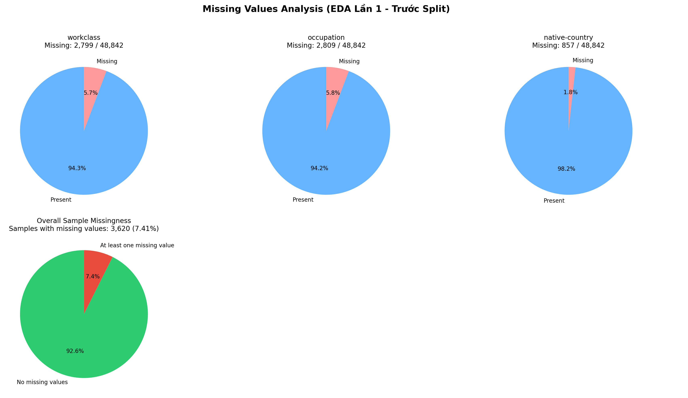
Có 3 đặc trưng chứa missing values: occupation có 2.809 giá trị
thiếu (5,75%), workclass có 2.799 (5,73%) và
native-country có 857 (1,75%). Tổng cộng 3.620 mẫu (7,41%)
có ít nhất một giá trị thiếu và được loại khỏi dataset trước khi chia tập.
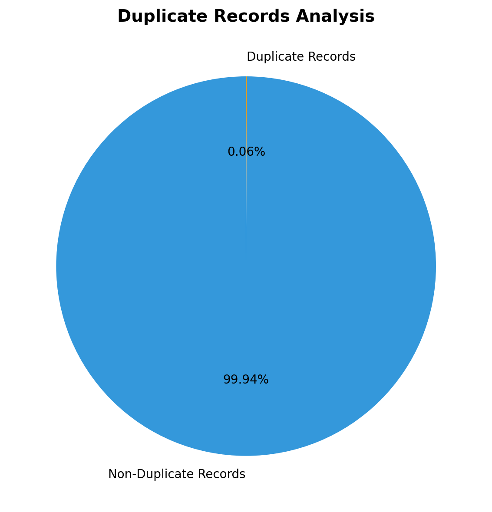
Notebook ghi nhận 29 bản ghi trùng lặp trong tổng số 48.842 mẫu, tương đương khoảng 0,06%. Đây là kết quả kiểm tra các hàng trùng hoàn toàn; notebook thống kê số lượng nhưng không thực hiện loại bỏ các bản ghi trùng này.
Kiểm tra giá trị không hợp lệ
Notebook kiểm tra giá trị âm ở 6 đặc trưng số. Không có giá trị nào bị gắn cờ theo các điều kiện kiểm tra được định nghĩa.
| Đặc trưng | Số giá trị không hợp lệ |
|---|---|
age | 0 |
fnlwgt | 0 |
education-num | 0 |
capital-gain | 0 |
capital-loss | 0 |
hours-per-week | 0 |
2.2. Phân tích phân phối đặc trưng — EDA lần 2
Sau khi loại missing values, dataset còn 45.222 mẫu và được chia thành Train, Validation, Test. Các phân tích chuyên sâu dưới đây chỉ sử dụng Training Set.
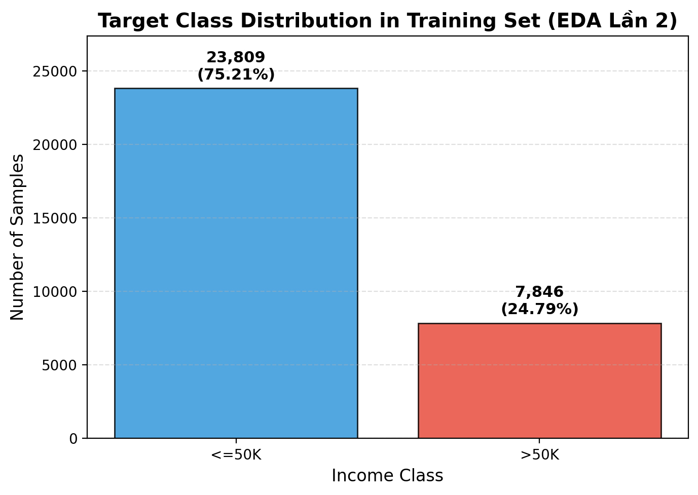
Training Set có 31.655 mẫu: lớp ≤50K gồm 23.809 mẫu (75,21%) và lớp >50K gồm 7.846 mẫu (24,79%). Tỷ lệ lớp đa số trên lớp thiểu số là khoảng 3,03:1. Vì vậy, notebook sử dụng trọng số lớp trong cả XGBoost và MLP, đồng thời quan tâm đến Precision, Recall và F1-score của lớp >50K.
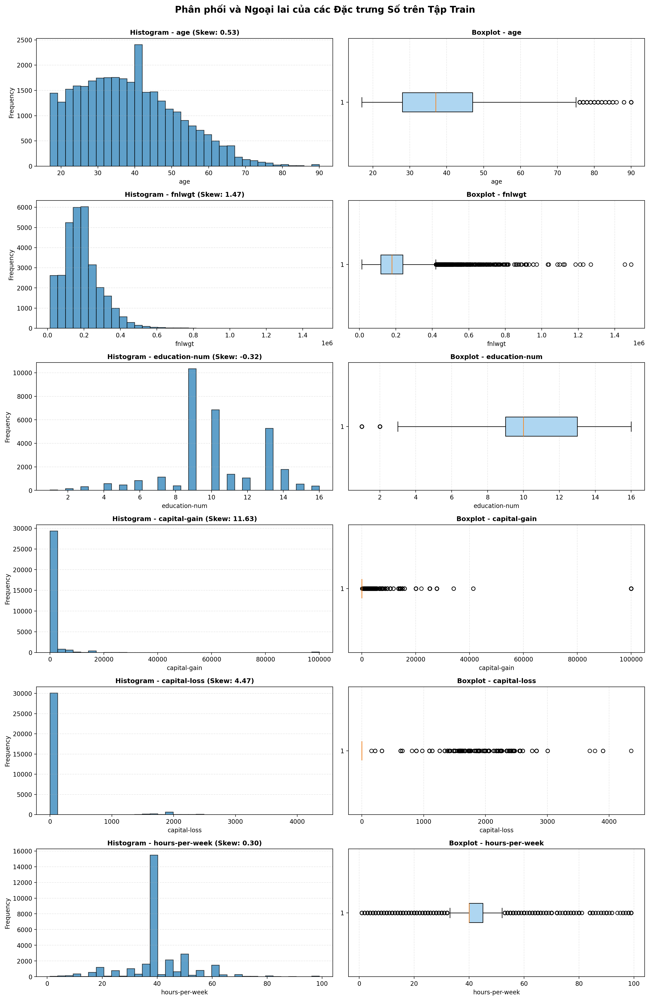
Biểu đồ histogram và boxplot mô tả 6 đặc trưng số ban đầu. Các biến
capital-gain và capital-loss có phân phối lệch phải
mạnh, với median bằng 0; fnlwgt cũng có phân phối lệch phải.
Boxplot hỗ trợ nhận diện các giá trị cần xem xét nhưng notebook không tự động
loại outlier dựa trên biểu đồ này.
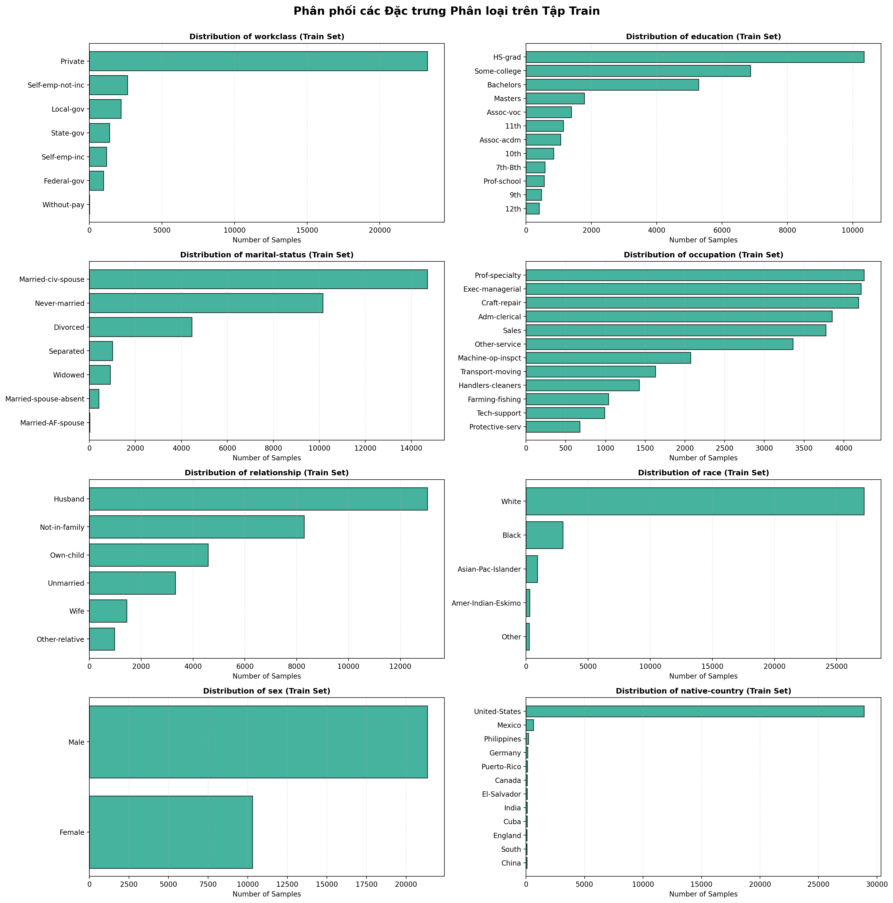
Các biểu đồ thể hiện tần suất của 8 biến categorical ban đầu. Một số nhóm chiếm
tỷ lệ lớn, chẳng hạn Private trong workclass (73,54%),
HS-grad trong education (32,70%) và White
trong race (86,00%). Những biến này được mã hóa One-Hot ở bước
preprocessing để không áp đặt thứ tự số giả tạo giữa các danh mục.
2.3. Phân tích mối quan hệ giữa các đặc trưng
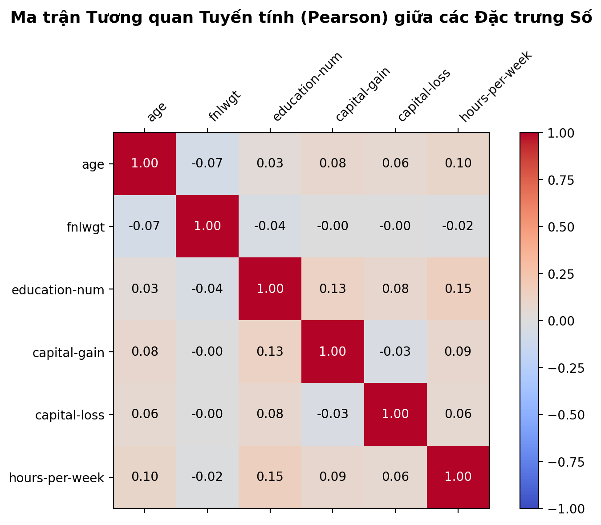
Ma trận Pearson được dùng để khảo sát tương quan tuyến tính giữa các biến số.
Bên cạnh đó, notebook đối chiếu education với
education-num và ghi nhận 16 cặp giá trị tương ứng 1-1. Do đó,
education được xem là đặc trưng dư thừa khi đã giữ
education-num.
2.4. Phân tích mối quan hệ với biến mục tiêu
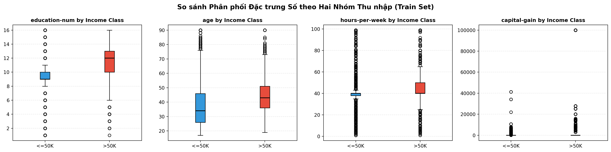
Boxplot so sánh education-num, age,
hours-per-week và capital-gain giữa hai nhóm thu nhập.
Kết quả hỗ trợ quan sát sự khác biệt phân phối giữa nhóm ≤50K và >50K.
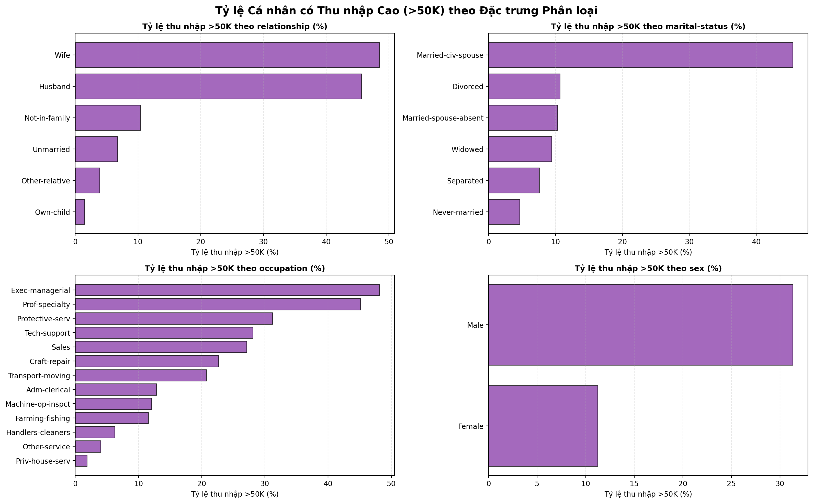
Notebook khảo sát tỷ lệ thu nhập cao theo relationship,
marital-status, occupation và sex.
Các danh mục có dưới 50 mẫu được loại khỏi biểu đồ để hạn chế việc diễn giải
những nhóm có quá ít quan sát.
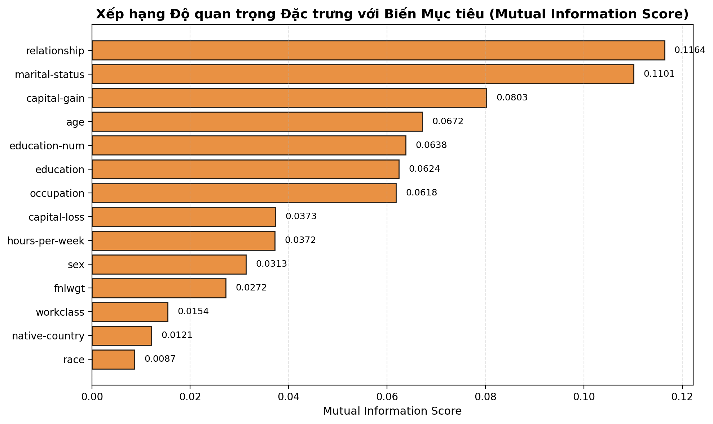
Hai đặc trưng có Mutual Information cao nhất là relationship (0,1164)
và marital-status (0,1101), tiếp theo là capital-gain
(0,0803), age (0,0672) và education-num (0,0638).
Điểm MI được tính trên Training Set sau khi tạm mã hóa các biến categorical
bằng OrdinalEncoder để phục vụ phân tích.
2.5. Quyết định Feature Selection
Dựa trên EDA lần 2, notebook loại bỏ hai đặc trưng education và
fnlwgt. education có quan hệ 1-1 với
education-num; trong khi fnlwgt có tương quan với target
gần bằng 0 (r = −0,0066) và được xem là trọng số mẫu thống kê thay vì thuộc tính
nội tại của cá nhân.
Sau Feature Selection, dữ liệu còn 12 đặc trưng đầu vào: 5 numerical và 7 categorical.
Chuẩn bị dữ liệu
Sau khi loại missing values trên toàn bộ dataset, notebook chia dữ liệu theo tỷ lệ
70% Train, 15% Validation và 15% Test bằng Stratified Sampling với
random_state=42. Tỷ lệ hai lớp được duy trì gần như tương đương giữa
các tập.
| Split | Số mẫu | Tỷ lệ | ≤50K | >50K |
|---|---|---|---|---|
| Train | 31.655 | 70% | 23.809 | 7.846 |
| Validation | 6.783 | 15% | 5.102 | 1.681 |
| Test | 6.784 | 15% | 5.103 | 1.681 |
| Tổng | 45.222 | 100% | 34.014 | 11.208 |
One-Hot Encoding được áp dụng cho 7 biến categorical. Encoder chỉ được fit trên
Training Set, sau đó transform Validation và Test với
handle_unknown="ignore". Kết hợp 5 biến numerical, mỗi tập có
87 đặc trưng sau encoding.
Nhãn mục tiêu được mã hóa ≤50K → 0 và >50K → 1.
Với MLP, 5 đặc trưng số (age, education-num,
capital-gain, capital-loss, hours-per-week)
được chuẩn hóa bằng StandardScaler. Scaler chỉ fit trên Train; các cột One-Hot
giữ nguyên. XGBoost sử dụng dữ liệu đã One-Hot Encoding mà không cần scaling.
Test Set được giữ riêng cho đánh giá cuối cùng. Các tham số của One-Hot Encoder và StandardScaler đều được học từ Training Set để hạn chế data leakage.
Phân tích và mô hình hóa
Notebook xây dựng và so sánh hai baseline: XGBoost (mô hình ensemble dựa trên cây) và Multi-Layer Perceptron (mạng nơ-ron truyền thẳng). Cả hai sử dụng trọng số để xử lý mất cân bằng lớp, với tỷ lệ lớp đa số/thiểu số xấp xỉ 3,03:1.
4.1. Cấu hình mô hình
| Thành phần | XGBoost | MLP |
|---|---|---|
| Kiến trúc | 300 estimators, max depth 6 | 87 → 256 → 128 → 1 |
| Learning rate | 0,05 | 0,001 |
| Regularization | Subsample 0,8; colsample_bytree 0,8 | Dropout 0,2; weight decay 0,0001 |
| Imbalance handling | scale_pos_weight ≈ 3,03 | BCEWithLogitsLoss(pos_weight ≈ 3,03) |
| Training | 300 estimators | Adam, batch size 256, tối đa 50 epochs |
| Early stopping | Không thiết lập trong notebook | Patience 5 theo validation loss |
4.2. Kết quả trên tập Validation
Các chỉ số Precision, Recall và F1-score trong bảng được tính cho lớp dương
>50K (label 1). ROC-AUC được tính từ xác suất dự đoán.
| Model | Accuracy | Precision (>50K) | Recall (>50K) | F1-score (>50K) | ROC-AUC |
|---|---|---|---|---|---|
| XGBoost | 0,8278 | 0,6079 | 0,8596 | 0,7122 | 0,9264 |
| MLP | 0,8107 | 0,5794 | 0,8620 | 0,6930 | 0,9127 |
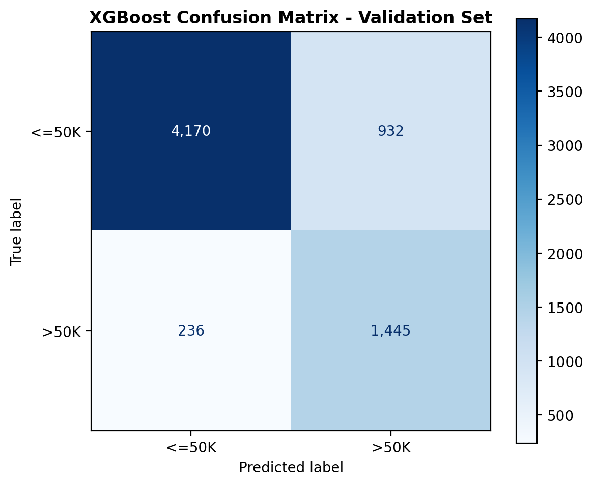
XGBoost đạt Accuracy 82,78%, F1-score 0,7122 và Recall 0,8596 cho lớp >50K. Kết quả cho thấy mô hình nhận diện được phần lớn mẫu thuộc lớp thu nhập cao, đồng thời vẫn có các trường hợp dự đoán nhầm giữa hai lớp.
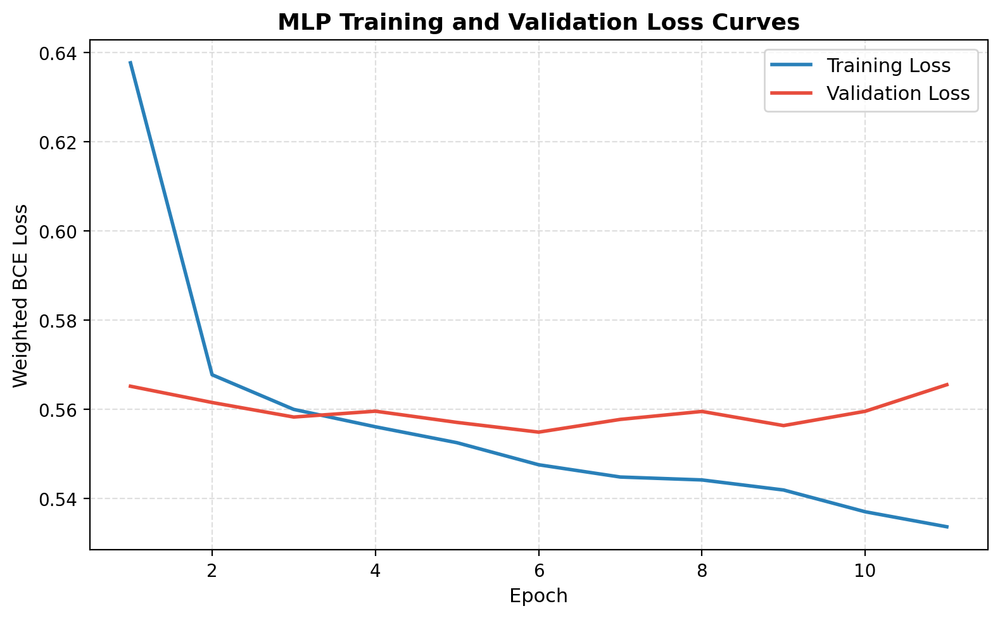
MLP được huấn luyện với tối đa 50 epochs và Early Stopping có patience bằng 5. Quá trình dừng tại epoch 11; validation loss tốt nhất là 0,5549 ở epoch 6. Mô hình được khôi phục về checkpoint có validation loss tốt nhất trước khi đánh giá.
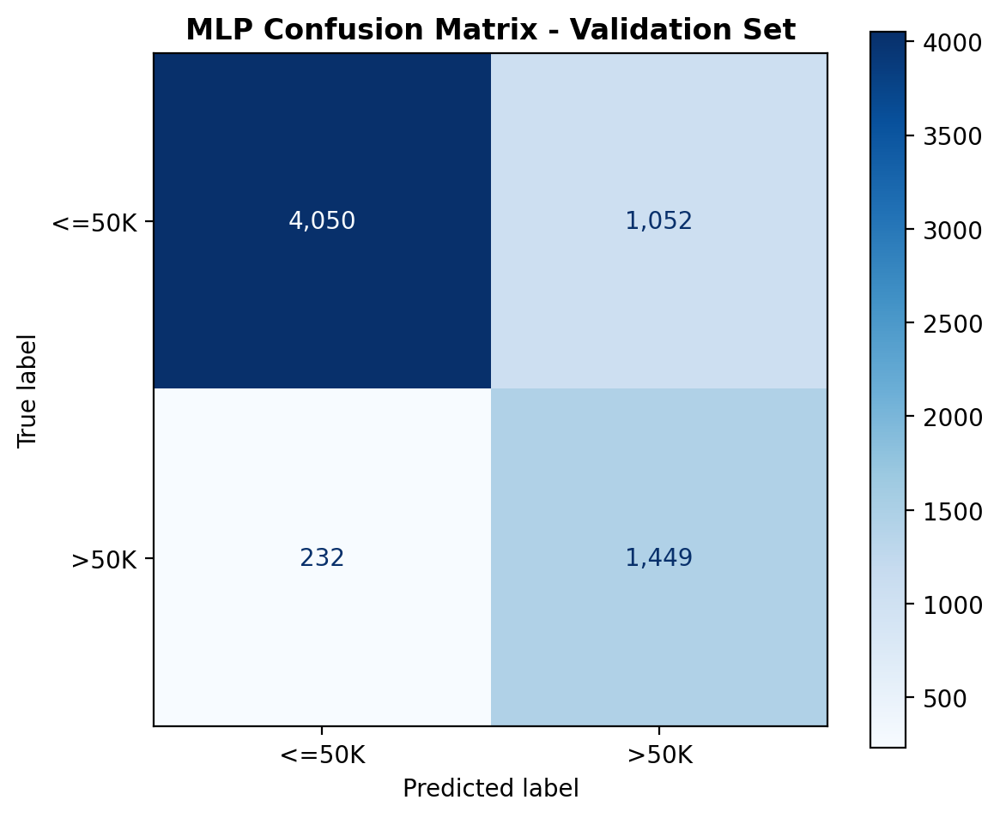
MLP đạt Accuracy 81,07%, F1-score 0,6930 và Recall 0,8620 cho lớp >50K. Recall của MLP nhỉnh hơn XGBoost một chút trên validation, trong khi Accuracy, Precision, F1-score và ROC-AUC thấp hơn.
4.3. Kết quả đánh giá cuối trên tập Test
Sau khi huấn luyện và đánh giá trên Validation, hai mô hình được so sánh trên cùng Test Set gồm 6.784 mẫu. Đây là kết quả đánh giá cuối cùng được lưu trong notebook.
| Model | Accuracy | Precision (>50K) | Recall (>50K) | F1-score (>50K) | ROC-AUC |
|---|---|---|---|---|---|
| XGBoost | 0,8297 | 0,6094 | 0,8715 | 0,7173 | 0,9261 |
| MLP | 0,8062 | 0,5713 | 0,8721 | 0,6904 | 0,9093 |
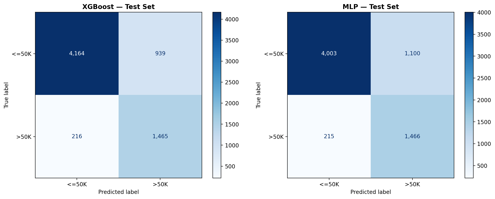
Hai mô hình được đánh giá trên cùng 6.784 mẫu test, gồm 5.103 mẫu ≤50K và 1.681 mẫu >50K. Ma trận nhầm lẫn cho thấy số lượng dự đoán đúng và các trường hợp mô hình bỏ sót hoặc phân loại nhầm từng nhóm thu nhập.
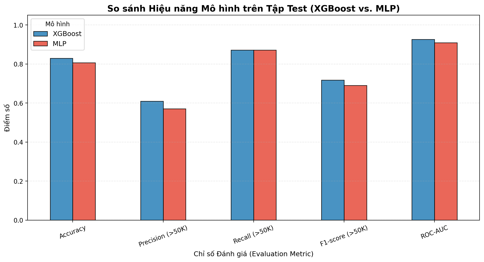
XGBoost có Accuracy (0,8297), Precision (0,6094), F1-score (0,7173) và ROC-AUC (0,9261) cao hơn MLP. MLP có Recall lớp >50K nhỉnh hơn rất nhẹ (0,8721 so với 0,8715). Như vậy, XGBoost có kết quả tổng thể tốt hơn trong lần thực nghiệm này, còn MLP đạt Recall cao hơn không đáng kể.
Tổng kết
Trong lần thực nghiệm được lưu trong notebook, XGBoost đạt Accuracy 82,97%, F1-score 0,7173 cho lớp >50K và ROC-AUC 0,9261 trên Test Set. MLP đạt lần lượt 80,62%, 0,6904 và 0,9093. XGBoost có kết quả tốt hơn ở phần lớn chỉ số đánh giá; MLP có Recall lớp >50K cao hơn rất nhẹ (0,8721 so với 0,8715).
Quy trình thực hiện gồm kiểm tra chất lượng dữ liệu, loại bỏ missing values trước khi split, EDA chuyên sâu trên Training Set, Feature Selection, One-Hot Encoding, StandardScaler cho MLP và xử lý mất cân bằng lớp bằng trọng số. Các kết quả cho thấy việc đánh giá riêng Precision, Recall và F1-score của lớp >50K là cần thiết, thay vì chỉ dựa vào Accuracy.
Hướng cải tiến có thể khảo sát thêm là điều chỉnh decision threshold và phân tích Precision–Recall trade-off trên Validation Set. Đây là đề xuất mở rộng, chưa phải thí nghiệm đã được thực hiện trong notebook.